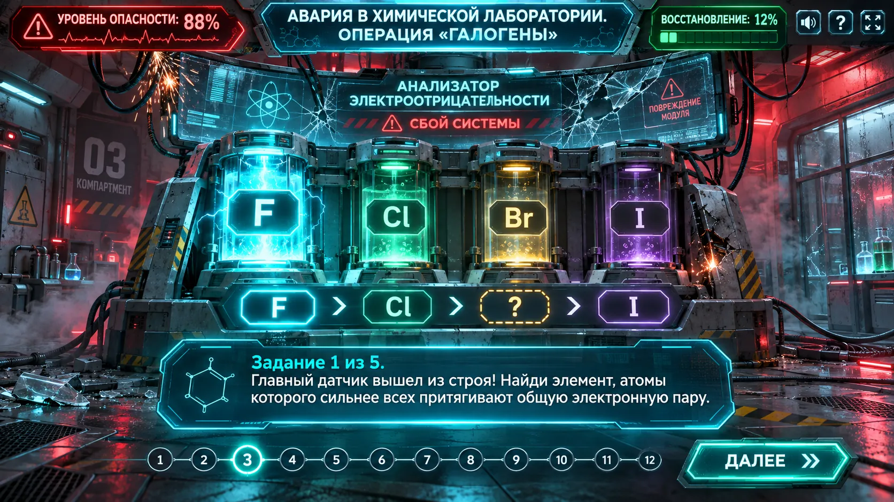

⚠
ОПАСНОСТЬ76%
ВОССТАНОВЛЕНО24%
Задание 1 из 5
⚠ ТРЕТИЙ ОТСЕК: СБОЙ АНАЛИЗАТОРА!
После изоляции токсичной зоны опасность снизилась до 76%. Теперь повреждён прибор электроотрицательности. Восстанови пять блоков, нажимая на датчики прямо в лаборатории.
Без таймера. Работает мышью и касанием.